MBNMAdose for dose-response Model-Based Network Meta-Analysis
Hugo Pedder
2022-03-16
mbnmadose.RmdIntroduction
This vignette demonstrates how to use MBNMAdose to perform Model-Based Network Meta-Analysis (MBNMA) of studies with multiple doses of different agents by accounting for the dose-response relationship. This can connect disconnected networks via the dose-response relationship and the placebo response, improve precision of estimated effects and allow interpolation/extrapolation of predicted response based on the dose-response relationship.
Modelling the dose-response relationship also avoids the “lumping” of different doses of an agent which is often done in Network Meta-Analysis (NMA) and can introduce additional heterogeneity or inconsistency. All models and analyses are implemented in a Bayesian framework, following an extension of the standard NMA methodology presented by (Lu and Ades 2004) and are run in JAGS (version 4.3.0 or later is required) (JAGS Computer Program 2017). For full details of dose-response MBNMA methodology see Mawdsley et al. (2016). Throughout this vignette we refer to a treatment as a specific dose or a specific agent
This package has been developed alongside MBNMAtime, a package that allows users to perform time-course MBNMA to incorporate multiple time points within different studies. However, they should not be loaded into R at the same time as there are a number of functions with shared names that perform similar tasks yet are specific to dealing with either time-course or dose-response data.
Workflow within the package
Functions within MBNMAdose follow a clear pattern of use:
- Load your data into the correct format using
mbnma.network() - Analyse your data using
mbnma.run(), or any of the available wrapper dose-response functions - Test for consistency at the treatment-level using functions like
nma.nodesplit()andnma.run() - Examine model results using forest plots and treatment rankings
- Use your model to predict responses using
predict() - Calculate relative effects between any doses (even those not in the original dataset) using
get.relative()
At each of these stages there are a number of informative plots that can be generated to help understand the data and to make decisions regarding model fitting.
Datasets Included in the Package
Triptans for migraine pain relief
triptans is from a systematic review of interventions for pain relief in migraine (Thorlund et al. 2014). The outcome is binary, and represents (as aggregate data) the number of participants who were headache-free at 2 hours. Data are from patients who had had at least one migraine attack, who were not lost to follow-up, and who did not violate the trial protocol. The dataset includes 70 Randomised-Controlled Trials (RCTs), comparing 7 triptans with placebo. Doses are standardised as relative to a “common” dose, and in total there are 23 different treatments (combination of dose and agent). triptans is a data frame in long format (one row per arm and study), with the variables studyID, AuthorYear, N, r, dose and agent.
| studyID | AuthorYear | n | r | dose | agent |
|---|---|---|---|---|---|
| 1 | Tfelt-Hansen P 2006 | 22 | 6 | 0 | placebo |
| 1 | Tfelt-Hansen P 2006 | 30 | 14 | 1 | sumatriptan |
| 2 | Goadsby PJ 2007 | 467 | 213 | 1 | almotriptan |
| 2 | Goadsby PJ 2007 | 472 | 229 | 1 | zolmitriptan |
| 3 | Tuchman M2006 | 160 | 15 | 0 | placebo |
| 3 | Tuchman M2006 | 174 | 48 | 1 | zolmitriptan |
Biologics for treatment of moderate-to-severe psoriasis
There are 3 psoriasis datasets from a systematic review of RCTs comparing biologics at different doses and placebo (Warren et al. 2019). Each dataset contains a different binary outcome, all based on the number of patients experiencing degrees of improvement on the Psoriasis Area and Severity Index (PASI) measured at 12 weeks follow-up. Each dataset contains information on the number of participants who achieved \(\geq75\%\) (psoriasis75), \(\geq90\%\) (psoriasis90), or \(100\%\) (psoriasis100).
Selective Serotonin Reuptake Inhibitors (SSRIs) for major depression
ssri is from a systematic review examining the efficacy of different doses of SSRI antidepressant drugs and placebo (Furukawa et al. 2019). The response to treatment is defined as a 50% reduction in depressive symptoms after 8 weeks (4-12 week range) follow-up. The dataset includes 60 RCTs comparing 5 different SSRIs with placebo.
kable(head(ssri), digits=2) | studyID | bias | age | weeks | agent | dose | n | r |
|---|---|---|---|---|---|---|---|
| 1 | Moderate risk | 43.0 | 6 | placebo | 0 | 149 | 69 |
| 1 | Moderate risk | 42.9 | 6 | fluoxetine | 20 | 137 | 77 |
| 2 | Low risk | 41.2 | 6 | placebo | 0 | 137 | 63 |
| 2 | Low risk | 40.9 | 6 | paroxetine | 20 | 138 | 74 |
| 7 | Low risk | 41.6 | 6 | placebo | 0 | 158 | 91 |
| 7 | Low risk | 41.3 | 6 | fluoxetine | 20 | 148 | 89 |
Interventions for Serum Uric Acid (SUA) reduction in gout
gout is from a systematic review of interventions for lowering Serum Uric Acid (SUA) concentration in patients with gout [not published previously]. The outcome is continuous, and aggregate data responses correspond to the mean change from baseline in SUA in mg/dL at 2 weeks follow-up. The dataset includes 10 Randomised-Controlled Trials (RCTs), comparing 5 different agents, and placebo. Data for one agent (RDEA) arises from an RCT that is not placebo-controlled, and so is not connected to the network directly. In total there were 19 different treatments (combination of dose and agent). gout is a data frame in long format (one row per arm and study), with the variables studyID, y, se, agent and dose.
| studyID | y | se | agent | dose | |
|---|---|---|---|---|---|
| 4 | 1102 | -0.53 | 0.25 | RDEA | 100 |
| 5 | 1102 | -1.37 | 0.18 | RDEA | 200 |
| 6 | 1102 | -1.73 | 0.25 | RDEA | 400 |
| 53 | 2001 | -6.82 | 0.06 | Febu | 240 |
| 54 | 2001 | 0.15 | 0.04 | Plac | 0 |
| 92 | 2003 | -3.43 | 0.03 | Allo | 300 |
Interventions for pain relief in osteoarthritis
osteopain is from a systematic review of interventions for pain relief in osteoarthritis, used previously in Pedder et al. (2019). The outcome is continuous, and aggregate data responses correspond to the mean WOMAC pain score at 2 weeks follow-up. The dataset includes 18 Randomised-Controlled Trials (RCTs), comparing 8 different agents with placebo. In total there were 26 different treatments (combination of dose and agent). The active treatments can also be grouped into 3 different classes, within which they have similar mechanisms of action. osteopain_2wkabs is a data frame in long format (one row per arm and study), with the variables studyID, agent, dose, class, y, se, and N.
| studyID | agent | dose | class | y | se | n | |
|---|---|---|---|---|---|---|---|
| 13 | 1 | Placebo | 0 | Placebo | 6.26 | 0.23 | 60 |
| 14 | 1 | Etoricoxib | 10 | Cox2Inhib | 5.08 | 0.16 | 114 |
| 15 | 1 | Etoricoxib | 30 | Cox2Inhib | 4.42 | 0.17 | 102 |
| 16 | 1 | Etoricoxib | 5 | Cox2Inhib | 5.34 | 0.16 | 117 |
| 17 | 1 | Etoricoxib | 60 | Cox2Inhib | 3.62 | 0.17 | 112 |
| 18 | 1 | Etoricoxib | 90 | Cox2Inhib | 4.08 | 0.17 | 112 |
Alogliptin for lowering blood glucose concentration in type II diabetes
alog_pcfb is from a systematic review of Randomised-Controlled Trials (RCTs) comparing different doses of alogliptin with placebo (Langford et al. 2016). The systematic review was simply performed and was intended to provide data to illustrate a statistical methodology rather than for clinical inference. Alogliptin is a treatment aimed at reducing blood glucose concentration in type II diabetes. The outcome is continuous, and aggregate data responses correspond to the mean change in HbA1c from baseline to follow-up in studies of at least 12 weeks follow-up. The dataset includes 14 RCTs, comparing 5 different doses of alogliptin with placebo, leading to 6 different treatments (combination of dose and agent) within the network. alog_pcfb is a data frame in long format (one row per arm and study), with the variables studyID, agent, dose, y, se, and N.
| studyID | agent | dose | y | se | n |
|---|---|---|---|---|---|
| NCT01263470 | alogliptin | 0.00 | 0.06 | 0.05 | 75 |
| NCT01263470 | alogliptin | 6.25 | -0.51 | 0.08 | 79 |
| NCT01263470 | alogliptin | 12.50 | -0.70 | 0.06 | 84 |
| NCT01263470 | alogliptin | 25.00 | -0.76 | 0.06 | 79 |
| NCT01263470 | alogliptin | 50.00 | -0.82 | 0.05 | 79 |
| NCT00286455 | alogliptin | 0.00 | -0.13 | 0.08 | 63 |
Inspecting the data
Before embarking on an analysis, the first step is to have a look at the raw data. Two features (network connectivity and dose-response relationship) are particularly important for MBNMA. For this we want to get our dataset into the right format for the package. We can do this using mbnma.network().
# Using the triptans dataset
network <- mbnma.network(triptans)
#> Values for `agent` with dose = 0 have been recoded to `Placebo`
#> agent is being recoded to enforce sequential numbering and allow inclusion of `Placebo`
summary(network)
#> Description: Network
#> Number of studies: 70
#> Number of treatments: 23
#> Number of agents: 8
#> Median (min, max) doses per agent (incl placebo): 4 (3, 6)
#> Agent-level network is CONNECTED
#>
#> Ttreatment-level network is CONNECTED
#> This function takes a dataset with the columns:
-
studyIDStudy identifiers -
agentAgent identifiers (can be character, factor or numeric) -
doseNumeric data indicating the dose of the given agent within the study arm -
classAn optional column indicating a particular class code. Agents with the same name/identifier must also have the same class code.
Depending on the type of data (and the likelihood) the following columns are required:
- Normal likelihood
-
yNumeric data indicating the mean response for a given study arm -
seNumeric data indicating the standard error for a given study arm
-
- Binomial likelihood
-
rNumeric data indicating the number of responders in a given study arm -
nNumeric data indicating the total number of participants in a given study arm
-
- Poisson likelihood
-
rNumeric data indicating the number of events in a given study arm -
ENumeric data indicating the total exposure time in a given study arm
-
It then performs the following checks on the data:
- The dataset has the required column names
- There are no missing values
- All doses are positive
- All SE, r, N and E are positive
- Class labels are consistent within each agent
- Studies have at least two arms
- Studies do not only compare the same agent at the same dose
Finally it converts the data frame into an object of class("mbnma.network"), which contains indices for study arms, numeric variables for treatments, agents and classes, and stores a vector of treatment, agent and class names as an element within the object. By convention, agents are numbered alphabetically, though if the original data for agents is provided as a factor then the factor codes will be used. This then contains all the necessary information for subsequent MBNMAdose functions.
Examining network connectivity
Examining how the evidence in the network is connected and identifying which studies compare which treatments/agents helps to understand which effects can be estimated, what information will be helping to inform those estimates, and whether linking via the dose-response relationship is possible if the network is disconnected at the treatment-level. The complexity of dose-response relationships that can be estimated is dependent on the number of doses of each agent available, so this is also important to know.
Network plots can be plotted which shows which treatments/agents have been compared in head-to-head trials. Typically the thickness of connecting lines (“edges”) is proportional to the number of studies that make a particular comparison and the size of treatment nodes (“vertices”) is proportional to the total number of patients in the network who were randomised to a given treatment/agent (provided N is included as a variable in the original dataset for mbnma.network()).
In MBNMAdose these plots are generated using igraph, and can be plotted by calling plot(). The generated plots are objects of class("igraph") meaning that, in addition to the options specified in plot(), various igraph functions can subsequently be used to make more detailed edits to them.
Within these network plots, vertices are automatically aligned in a circle (as the default) and can be tidied by shifting the label distance away from the nodes.
# Prepare data using the triptans dataset
tripnet <- mbnma.network(triptans)
#> Values for `agent` with dose = 0 have been recoded to `Placebo`
#> agent is being recoded to enforce sequential numbering and allow inclusion of `Placebo`
summary(tripnet)
#> Description: Network
#> Number of studies: 70
#> Number of treatments: 23
#> Number of agents: 8
#> Median (min, max) doses per agent (incl placebo): 4 (3, 6)
#> Agent-level network is CONNECTED
#>
#> Ttreatment-level network is CONNECTED
#>
# Draw network plot
plot(tripnet)
If some vertices are not connected to the network reference treatment through any pathway of head-to-head evidence, a warning will be given. The nodes that are coloured white represent these disconnected vertices.
# Prepare data using the gout dataset
goutnet <- mbnma.network(gout)
summary(goutnet)
#> Description: Network
#> Number of studies: 10
#> Number of treatments: 19
#> Number of agents: 6
#> Median (min, max) doses per agent (incl placebo): 5 (3, 6)
#> Agent-level network is DISCONNECTED
#>
#> Treatment-level network is DISCONNECTED
#>
plot(goutnet, label.distance = 5)
#> Warning in check.network(g): The following treatments/agents are not connected
#> to the network reference:
#> Allo_245
#> Allo_256
#> Allo_300
#> Allo_400
#> Benz_50
#> Benz_139
#> Benz_143
#> Benz_200
#> Febu_40
#> Febu_80
#> Febu_120
#> RDEA_100
#> RDEA_200
#> RDEA_400However, whilst at the treatment-level (specific dose of a specific agent), many of these vertices are disconnected, at the agent level they are connected (via different doses of the same agent), meaning that via the dose-response relationship it is possible to estimate results.
# Plot at the agent-level
plot(goutnet, level="agent", label.distance = 6)
#> Warning in check.network(g): The following treatments/agents are not connected
#> to the network reference:
#> RDEA
One agent (RDEA) is still not connected to the network, but MBNMAdose allows agents to connect via a placebo response even if they do not include placebo in a head-to-head trial (see [Linking disconnected treatments via the dose-response relationship]).
# Plot connections to placebo via a two-parameter dose-response function (e.g. Emax)
plot(goutnet, level="agent", doselink = 2, remove.loops = TRUE, label.distance = 6)
#> Dose-response connections to placebo plotted based on a dose-response
#> function with 1 degrees of freedom
It is also possible to plot a network at the treatment level but to colour the doses by the agent that they belong to.
# Colour vertices by agent
plot(goutnet, v.color = "agent", label.distance = 5)
#> Warning in check.network(g): The following treatments/agents are not connected
#> to the network reference:
#> Allo_245
#> Allo_256
#> Allo_300
#> Allo_400
#> Benz_50
#> Benz_139
#> Benz_143
#> Benz_200
#> Febu_40
#> Febu_80
#> Febu_120
#> RDEA_100
#> RDEA_200
#> RDEA_400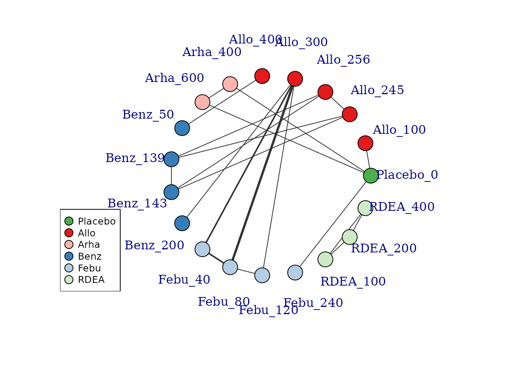
Several further options exist to allow for inclusion of disconnected treatments, such as assuming some sort of common effect among agents within the same class. This is discussed in more detail later in the vignette.
Examining the dose-response relationship
In order to consider which functional forms may be appropriate for modelling the dose-response relationship, it is useful to look at results from a “split” network meta-analysis (NMA), in which each dose of an agent is considered as separate and unrelated (i.e. we are not assuming any dose-response relationship). The nma.run() function performs a simple NMA, and by default it drops studies that are disconnected at the treatment-level (since estimates for these will be very uncertain if included).
# Run a random effect split NMA using the alogliptin dataset
alognet <- mbnma.network(alog_pcfb)
nma.alog <- nma.run(alognet, method="random")
print(nma.alog)
#> $jagsresult
#> Inference for Bugs model at "/tmp/Rtmp6v0Osl/file43d622e1ee0f", fit using jags,
#> 3 chains, each with 20000 iterations (first 10000 discarded), n.thin = 10
#> n.sims = 3000 iterations saved
#> mu.vect sd.vect 2.5% 25% 50% 75% 97.5% Rhat
#> d[1] 0.000 0.000 0.000 0.000 0.000 0.000 0.000 1.000
#> d[2] -0.455 0.091 -0.638 -0.515 -0.454 -0.394 -0.273 1.001
#> d[3] -0.654 0.046 -0.744 -0.683 -0.655 -0.626 -0.563 1.002
#> d[4] -0.709 0.046 -0.799 -0.740 -0.710 -0.680 -0.614 1.001
#> d[5] -0.758 0.087 -0.922 -0.816 -0.760 -0.701 -0.579 1.002
#> d[6] -0.677 0.167 -1.003 -0.788 -0.675 -0.567 -0.343 1.001
#> sd 0.123 0.028 0.075 0.104 0.120 0.140 0.182 1.001
#> totresdev 46.819 9.885 29.257 39.720 46.135 53.227 68.483 1.001
#> deviance -124.495 9.885 -142.057 -131.594 -125.179 -118.087 -102.831 1.002
#> n.eff
#> d[1] 1
#> d[2] 3000
#> d[3] 1700
#> d[4] 3000
#> d[5] 1700
#> d[6] 2800
#> sd 3000
#> totresdev 3000
#> deviance 3000
#>
#> For each parameter, n.eff is a crude measure of effective sample size,
#> and Rhat is the potential scale reduction factor (at convergence, Rhat=1).
#>
#> DIC info (using the rule, pD = var(deviance)/2)
#> pD = 36.6 and DIC = -88.6
#> DIC is an estimate of expected predictive error (lower deviance is better).
#>
#> $trt.labs
#> [1] "Placebo_0" "alogliptin_6.25" "alogliptin_12.5" "alogliptin_25"
#> [5] "alogliptin_50" "alogliptin_100"
#>
#> $UME
#> [1] FALSE
#>
#> attr(,"class")
#> [1] "nma"
# Draw plot of NMA estimates plotted by dose
plot(nma.alog)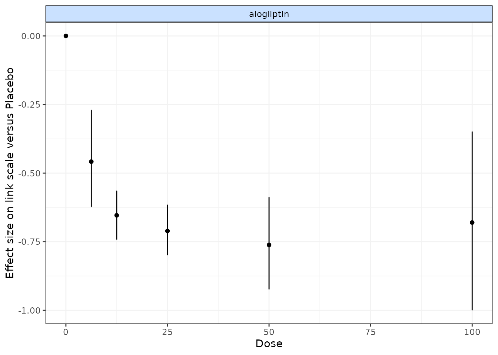
In the alogliptin dataset there appears to be a dose-response relationship, and it also appears to be non-linear.
One additional use of nma.run() is that is can be used after fitting an MBNMA to ensure that fitting a dose-response function is not leading to poorer model fit than when conducting a conventional NMA. Comparing the total residual deviance between NMA and MBNMA models is useful to identify if introducing a dose-response relationship is leading to poorer model fit. However, it is important to note that if treatments are disconnected in the NMA and have been dropped (drop.discon=TRUE), there will be fewer observations present in the dataset, which will subsequently lead to lower pD and lower residual deviance, meaning that model fit statistics from NMA and MBNMA may not be directly comparable.
Analysis using mbnma.run()
MBNMA is performed in MBNMAdose by applying mbnma.run(). A "mbnma.network" object must be provided as the data for mbnma.run(). The key arguments within mbnma.run() involve specifying the functional form used to model the dose-response, and the dose-response parameters that comprise that functional form.
Dose-response functions
Various functional forms are implemented within MBNMAdose, that allow a variety of parameterizations and dose-response shapes. These are provided as an object of class "dosefun" to the fun argument in mbnma.run(). The interpretation of the dose-response parameter estimates will therefore depend on the dose-response function used. In previous versions of MBNMAdose (prior to version 0.4.0), wrapper functions were provided for each of the commonly used dose-response functions in mbnma.run(). For example, mbnma.emax() is equivalent to mbnma.run(fun=demax()). This will be deprecated in future versions.
For the following functions \(x_{i,k}\) refers to the dose and \(t_{i,k}\) to the agent in arm \(k\) of study \(i\).
Log-linear (
dloglin()): \(f(x_{i,k}, t_{i,k})=\lambda_{t_{i,k}} \times ln(x_{i,k} + 1)\) where \(lambda\) controls the gradient of the dose-response relationship.Exponential (
dexp()): \(f(x_{i,k}, t_{i,k})=Emax_{t_{i,k}} (1 - e^{-x_{i,k}})\) where \(Emax\) is the maximum efficacy of an agent.Emax (
demax()): \(f(x_{i,k}, t_{i,k})=\dfrac{Emax_{t_{i,k}} \times {x_{i,k}^{\gamma_{t_{i,k}}}}} {ED50_{t_{i,k}}^{\gamma_{t_{i,k}}} + x_{i,k}^{\gamma_{t_{i,k}}}}\) where \(Emax\) is the maximum efficacy that can be achieved, \(ED50\) is the dose at which 50% of the maximum efficacy is achieved, and \(\gamma\) is the Hill parameter that controls the sigmoidal shape of the function. By default,demax()fits a 2-parameter Emax function in which \(\gamma_{t_{i,k}}=1\) (hill=NULLin function argument).Polynomial (e.g. linear) (
dpoly()): \(f(x_{i,k}, t_{i,k})=\beta_{1_{t_{i,k}}}x_{i,k}+...+\beta_{p_{t_{i,k}}}x^p_{i,k}\) where \(p\) is the degree of the polynomial (e.g. 1 for linear) and \(\beta_p\) are the coefficientsFractional polynomial (
dfpoly()): \(f(x_{i,k}, t_{i,k})=\beta_{1_{t_{i,k}}}x_{i,k}^{\gamma_1}+...+\beta_{p_{t_{i,k}}}x^{\gamma_p}_{i,k}\) where \(p\) is the degree of the polynomial, \(\beta_p\) are the coefficients, and \(x_{i,k}^{\gamma_p}\) is a regular power except where \(\gamma_p=0\) where \({x_{i,k}^{(0)}=ln(x_{i,k})}\). If a fractional polynomial power \({\gamma_p}\) repeats within the function it is multiplied by another \({ln(x_{i,k})}\).Spline functions (
dspline()): B-splines (type="bs"), natural cubic splines (type="ns") and piecewise linear splines (type="ls") can be fitted. \(f(x_{i,k}, t_{i,k})=\sum_{p=1}^{P} \beta_{p,t_{i,k}} X_{p,i,k}\) where \(\beta_{p,t_{i,k}}\) is the regression coefficient for the \(p^{th}\) spline and \(X_{1:P,i,k}\) is the basis matrix for the spline, defined by the spline type.Non-parametric monotonic function (
dnonparam()): Follows the approach of Owen et al. (2015). Thedirectioncan be specified as"increasing"or"decreasing".User-defined function (
duser()): Any function that can be explicitly defined by the user within (see User-defined dose-response function)Agent-specific functions (
dmulti()): Allows for a separate dose-response function to be fitted to each agent in the network (see Agent-specific dose-response functions)
Dose-response parameters
Dose-response parameters can be specified in different ways which affects the key parameters estimated by the model and implies different modelling assumptions. Three different specifications are available for each parameter:
-
"rel"indicates that relative effects should be pooled for this dose-response parameter separately for each agent in the network. This preserves randomisation within included studies and is likely to vary less between studies (only due to effect modification). -
"common"indicates that a single absolute value for this dose-response parameter should be estimated across the whole network that does not vary by agent. This is particularly useful for parameters expected to be constant (e.g. Hill parameters indemax()or fractional polynomial power parameters infpoly()). -
"random"indicates that a single absolute value should be estimated separately for each agent, but that all the agent values vary randomly around a single mean absolute network effect. It is similar to"common"but makes slightly less strong assumptions. -
numeric()Assigned a numeric value - this is similar to assigning"common", but the single absolute value is assigned as a numeric value by the user, rather than estimated from the data.
In mbnma.run(), an additional argument, method, indicates what method to use for pooling relative effects and can take either the values "common", implying that all studies estimate the same true effect (akin to a “fixed effect” meta-analysis), or "random", implying that all studies estimate a separate true effect, but that each of these true effects vary randomly around a true mean effect. This approach allows for modelling of between-study heterogeneity.
If relative effects ("rel") are modelled on more than one dose-response parameter then by default, a correlation will be assumed between the dose-response parameters, which will typically improve estimation (provided the parameters are correlated…they usually are). This can be prevented by setting cor=FALSE.
Output
mbnma.run() returns an object of class c("rjags", "mbnma"). summary() provides posterior medians and 95% credible intervals (95%CrI) for different parameters in the model, naming them by agent and giving some explanation of the way they have been specified in the model. print() can also be used to give full summary statistics of the posterior distributions for monitored nodes in the JAGS model. Estimates are automatically reported for parameters of interest depending on the model specification (unless otherwise specified in parameters.to.save).
Dose-response parameters will be named in the output, with a separate coefficient for each agent (if specified as "rel"). If class effects are modelled, parameters for classes are represented by the upper case name of the dose-response parameter they correspond to (e.g. EMAX will be the class effects on emax). The SD of the class effect (e.g. sd.EMAX, sd.BETA.1) is the SD of agents within a class for the dose-response parameter they correspond to.
sd corresponds to the between-study SD. However, sd. followed by a dose-response parameter name (e.g. sd.emax, sd.beta.1) is the between-agent SD for dose response parameters modeled using "common" or "random".
totresdev is the residual deviance, and deviance the deviance of the model. Model fit statistics for pD (effective number of parameters) and DIC (Deviance Information Criterion) are also reported, with an explanation as to how they have been calculated.
Examples
An example MBNMA of the triptans dataset using an Emax dose-response function and common treatment effects that pool relative effects for each agent separately on both Emax and ED50 parameters follows:
# Run an Emax dose-response MBNMA
mbnma <- mbnma.run(tripnet, fun=demax(emax="rel", ed50="rel"),
method="random")
#> 'ed50' parameters are on exponential scale to ensure they take positive values on the natural scale
#> `likelihood` not given by user - set to `binomial` based on data provided
#> `link` not given by user - set to `logit` based on assigned value for `likelihood`
# Print neat summary of output
summary(mbnma)
#> ========================================
#> Dose-response MBNMA
#> ========================================
#>
#> Dose-response function: emax
#>
#> Pooling method
#>
#> Method: Correlation modelled between relative effect dose-response parametersRandom effects estimated for relative effects
#>
#> Parameter Median (95%CrI)
#> -----------------------------------------------------------------------
#> Between-study SD for relative effects 0.244 (0.161, 0.333)
#>
#>
#> emax dose-response parameter results
#>
#> Pooling: relative effects for each agent
#>
#> |Agent |Parameter | Median| 2.5%| 97.5%|
#> |:------------|:---------|------:|------:|------:|
#> |eletriptan |emax[2] | 2.5864| 2.1469| 3.2582|
#> |sumatriptan |emax[3] | 1.8317| 1.4827| 2.4117|
#> |frovatriptan |emax[4] | 1.9523| 1.2803| 3.3867|
#> |almotriptan |emax[5] | 1.8361| 1.3052| 3.1432|
#> |zolmitriptan |emax[6] | 2.0992| 1.5627| 3.1407|
#> |naratriptan |emax[7] | 1.0792| 0.4218| 2.2481|
#> |rizatriptan |emax[8] | 2.4828| 1.8594| 3.9745|
#>
#>
#> ed50 dose-response parameter results
#>
#> Parameter modelled on exponential scale to ensure it takes positive values
#> on the natural scale
#> Pooling: relative effects for each agent
#>
#> |Agent |Parameter | Median| 2.5%| 97.5%|
#> |:------------|:---------|-------:|-------:|-------:|
#> |eletriptan |ed50[2] | -0.6451| -1.2760| -0.0289|
#> |sumatriptan |ed50[3] | -0.5039| -1.3825| 0.2663|
#> |frovatriptan |ed50[4] | -0.4594| -1.5938| 0.5782|
#> |almotriptan |ed50[5] | -0.2784| -1.2189| 0.7669|
#> |zolmitriptan |ed50[6] | -0.3683| -1.2729| 0.4978|
#> |naratriptan |ed50[7] | -0.1355| -1.3858| 1.0842|
#> |rizatriptan |ed50[8] | -0.5830| -1.5005| 0.3889|
#>
#>
#> Model Fit Statistics
#> Effective number of parameters:
#> pD calculated using the Kullback-Leibler divergence = 121.9
#>
#> Deviance = 1094.9
#> Residual deviance = 191.8
#> Deviance Information Criterion (DIC) = 1216.9In this example the emax parameters are the maximum efficacy that can be achieved for each agent. The ed50 parameters are the the dose at which 50% of the maximum efficacy is achieved for each agent. Results for ED50 are given on the log scale as it is constrained to be greater than zero. sd corresponds to the between-study SD (included because method="random").
Instead of estimating a separate relative effect for each agent, a simpler dose-response model that makes stronger assumptions could estimate a single parameter across the whole network for ED50, but still estimate a separate effect for each agent for Emax:
# Emax model with single parameter estimated for Emax
emax <- mbnma.run(tripnet, fun=demax(emax="rel", ed50="common"),
method="random")
#> 'ed50' parameters are on exponential scale to ensure they take positive values on the natural scale
#> `likelihood` not given by user - set to `binomial` based on data provided
#> `link` not given by user - set to `logit` based on assigned value for `likelihood`
summary(emax)
#> ========================================
#> Dose-response MBNMA
#> ========================================
#>
#> Dose-response function: emax
#>
#> Pooling method
#>
#> Method: Random effects estimated for relative effects
#>
#> Parameter Median (95%CrI)
#> -----------------------------------------------------------------------
#> Between-study SD for relative effects 0.242 (0.155, 0.333)
#>
#>
#> emax dose-response parameter results
#>
#> Pooling: relative effects for each agent
#>
#> |Agent |Parameter | Median| 2.5%| 97.5%|
#> |:------------|:---------|------:|------:|------:|
#> |eletriptan |emax[2] | 2.8302| 2.3384| 3.5120|
#> |sumatriptan |emax[3] | 1.8898| 1.5979| 2.2946|
#> |frovatriptan |emax[4] | 2.0849| 1.3542| 2.9901|
#> |almotriptan |emax[5] | 1.7629| 1.3349| 2.3391|
#> |zolmitriptan |emax[6] | 2.1072| 1.7037| 2.6583|
#> |naratriptan |emax[7] | 1.0318| 0.4361| 1.7029|
#> |rizatriptan |emax[8] | 2.7030| 2.1797| 3.4840|
#>
#>
#> ed50 dose-response parameter results
#>
#> Parameter modelled on exponential scale to ensure it takes positive values
#> on the natural scale
#> Pooling: single parameter across all agents in the network
#>
#> |Parameter | Median| 2.5%| 97.5%|
#> |:---------|-------:|-------:|-----:|
#> |ed50 | -0.3796| -0.8773| 0.118|
#>
#>
#> Model Fit Statistics
#> Effective number of parameters:
#> pD calculated using the Kullback-Leibler divergence = 119.5
#>
#> Deviance = 1094.4
#> Residual deviance = 191.3
#> Deviance Information Criterion (DIC) = 1213.9In this example ed50 only has a single parameter, which corresponds to the dose at which 50% of the maximum efficacy is achieved, assumed to be equal across all agents in the network.
Parameter interpretation
Parameter interpretation depends both on the link scale on which the outcome is modeled, and on the dose-response function used in the model.
For example for a binomial outcome modeled using a logit link function and an Emax dose-response function, the emax parameter represents the maximum efficacy on the logit scale - it is modeled on the outcome scale and hence is dependent on the link function. As indicated in the help file (?demax()), the ed50 parameter is modeled on the log-scale to ensure that it takes positive values on the natural scale, but is not modeled on the outcome scale so is not dependent on the link function. Therefore it can be interpreted as the log-dose at which 50% of the maximum efficacy is achieved. The hill parameter is also modeled on the log-scale, and it can be interpreted as a log-value that controls the sigmoidicity of the dose-response function for the outcome on the logit scale.
For a continuous outcome modeled using link="smd", whilst not a true link function it implies modelling Standardised Mean Differences (SMD). For a linear dose-response function (dpoly(degree=1)), beta.1 represents the change in SMD for each additional unit of dose. For a quadratic dose-response function (dpoly(degree=2)), beta.2 represents the change in beta.1 for each additional unit of dose.
With some dose-response functions (e.g. splines, fractional polynomials) parameter interpretation can be challenging. The get.relative() function can make this easier as this allows relative effects to be estimated between agents at specific doses, which is typically much more easily understandable and presentable (see Estimating relative effects).
Additional arguments for mbnma.run()
Several additional arguments can be given to mbnma.run() that require further explanation.
Class effects
Similar effects between agents within the network can be modelled using class effects. This requires assuming that different agents have some sort of common class effect, perhaps due to similar mechanisms of action. Advantages of this is that class effects can be used to connect agents that might otherwise be disconnected from the network, and they can also provide additional information on agents that might otherwise have insufficient data available to estimate a desired dose-response. The drawback is that this requires making additional assumptions regarding similarity of efficacy.
One difficult of this modelling aspect in particular is that the scales for dose-response parameters must be the same across different agents within a class for this assumption to be valid. For example, in an Emax model it may be reasonable to assume a class effect on the Emax parameter, as this is parameterised on the response scale and so could be similar across agents of the same class. However, the ED50 parameter is parameterised on the dose scale, which is likely to differ for each agent and so an assumption of similarity between agents for this parameter may be less valid. One way to try to account for this issue and make dose scales more consistent across agents is to standardise doses for each agent relative to its “common” dose (see Thorlund et al. (???)), though we expect that this may lead to bias if the common dose is located at a different point along the dose-response curve.
Class effects can only be applied to dose-response parameters which vary by agent. In mbnma.run() they are supplied as a list, in which each element is named following the name of the corresponding dose-response parameter as defined in the dose-response function. The names will therefore differ when using wrapper functions for mbnma.run(). The class effect for each dose-response parameter can be either "common", in which the effects for each agent within the same class are constrained to a common class effect, or "random", in which the effects for each agent within the same class are assumed to be randomly distributed around a shared class mean.
When working with class effects in MBNMAdose a variable named class must be included in the original data frame provided to mbnma.network(). Below we assign a class for two similar agents in the dataset - Naproxcinod and Naproxen. We will estimate separate effects for all other agents, so we set their classes to be equal to their agents.
# Using the osteoarthritis dataset
pain.df <- osteopain
# Set class equal to agent for all agents
pain.df$class <- pain.df$class
# Set a shared class (NSAID) only for Naproxcinod and Naproxen
pain.df$class[pain.df$agent %in% c("Naproxcinod", "Naproxen")] <-
"NSAID"
# Run a restricted cubic spline MBNMA with a random class effect on beta.1
classnet <- mbnma.network(pain.df)
splines <- mbnma.run(classnet, fun=dspline(type="bs", knots=2), class.effect = list(beta.1="random"))Mean class effects are given in the output as D.ed50/D.1 parameters. These can be interpreted as the effect of each class for Emax parameters (beta.1). Note the number of D.ed50 parameters is therefore equal to the number of classes defined in the dataset.
If we had specified that the class effects were "random", each treatment effect for Emax (beta.1) would be assumed to be randomly distributed around its class mean with SD given in the output as sd.D.ed50/sd.D.1.
Mean class effects are represented in the output by the upper case name of the dose-response parameter they correspond to. In this case, BETA.1 is the class effects on beta.1, the first spline coefficient. The SD of the class effect is the SD of agents within a class for the dose-response parameter they correspond to. In this case sd.BETA.1 is the within-class SD for beta.1.
User-defined dose-response function
Users can define their own dose-response function using duser() rather than using one of the functions provided in MBNMAdose. The dose-response is specified in terms of beta parameters and dose. This allows a huge degree of flexibility when defining the dose-response relationship.
The function assigned needs to fulfil a few criteria to be valid: * dose must always be included in the function * At least one beta dose-response parameter must be specified, up to a maximum of four. These must always be named beta.1, beta.2, beta.3 and beta.4, and must be included sequentially (i.e. don’t include beta.3 if beta.2 is not included) * Indices used by JAGS should not be added (e.g. use dose rather than dose[i,k]) * Any mathematical/logical operators that can be implemented in JAGS can be added to the function (e.g. exp(), ifelse()). See the JAGS manual (JAGS Computer Program 2017) for further details.
Agent-specific dose-response functions
Different dose-response functions can be used for different agents within the network. This allows for the modelling of more complex dose-response functions in agents for which there are many doses available, and less complex functions in agents for which there are fewer doses available. Note that these models are typically less computationally stable than single dose-response function models, and they are likely to benefit less from modelling correlation between multiple dose-response parameters since there are fewer agents informing correlations between each dose-response parameter.
This can be modeled using the dmulti() dose-response function and assigning a list of objects of class "dosefun" to it. Each element in the list corresponds to an agent in the network (the order of which should be the same as the order of agents in the "mbnma.network" object). A dose-response function for Placebo should be included in the list, though which function is used is typically irrelevant since evaluating the function at dose=0 will typically equal 0.
# Using the depression SSRI dataset
depnet <- mbnma.network(ssri)
dr.funs <- dmulti(list(
"Placebo"=dpoly(degree=2),
"citalopram"=dpoly(degree=2),
"escitalopram"=dpoly(degree=2),
"fluoxetine"=dspline(type="ns",knots=2),
"paroxetine"=dpoly(degree=2),
"sertraline"=dspline(type="ns",knots=2)
))
multifun <- mbnma.run(depnet, fun=dr.funs, method="common", n.iter=50000)
summary(multifun)Because an MBNMA model with a linear dose-response function (dpoly(degree=1)) is mathematically equivalent to a standard NMA model, using agent-specific dose-response functions allows analysis of datasets that both include multiple doses of different drugs and interventions for which a dose-response relationship is not realistic (e.g. surgery) or difficult to assume (e.g. psychotherapy, exercise interventions). Interventions without a dose-response relationship can be coded in the dataset as different agents, each of which should be assigned a dose of 1, and these can then be modeled using a linear dose-response relationship, whilst agents with a plausible dose-response can be assigned a function that appropriately captures their dose-response relationship.
Splines and knots
For a more flexible dose-response shape, various different splines can be fitted to the data by using dspline(). This model is very flexible and can allow for a variety of non-monotonic dose-response relationships, though parameters can be difficult to interpret.
To fit this model, the number/location of knots (the points at which the different spline pieces meet) should be specified. If a single number is given, it represents the the number of knots to be equally spaced across the dose range of each agent. Alternatively several probabilities can be given that represent the quantiles of the dose range for each agent at which knots should be located.
Correlation between dose-response parameters
mbnma.run() automatically models correlation between relative effects dose-response parameters. This can be prevented by specifying cor=FALSE in mbnma.run(). The correlation is modeled using a vague Wishart prior, but this can be made more informative by specifying a scale matrix for the prior. This corresponds to the expectation of the Wishart prior. A different scale matrix can be given to the model in omega. Each row of the scale matrix corresponds to the 1st, 2nd, 3rd, etc. dose-response parameter that has been modeled using relative effects (as specified in the dose-response function).
Priors
Default vague priors for the model are as follows:
\[ \begin{aligned} &d_{p,a} \sim N(0,10000)\\ &beta_{p} \sim N(0,10000)\\ &\sigma \sim N(0,400) \text{ limited to } x \in [0,\infty]\\ &\sigma_{p} \sim N(0,400) \text{ limited to } x \in [0,\infty]\\ &D_{p,c} \sim N(0,1000)\\ &\sigma^D_{p} \sim N(0,400) \text{ limited to } x \in [0,\infty]\\ \end{aligned} \]
…where \(p\) is an identifier for the dose-response parameter (e.g. 1 for Emax and 2 for ED50), \(a\) is an agent identifier and \(c\) is a class identifier.
Users may wish to change these, perhaps in order to use more/less informative priors, but also because the default prior distributions in some models may lead to errors when compiling/updating models.
If the model fails during compilation/updating (i.e. due to a problem in JAGS), mbnma.run() will generate an error and return a list of arguments that mbnma.run() used to generate the model. Within this (as within a model that has run successfully), the priors used by the model (in JAGS syntax) are stored within "model.arg":
print(mbnma$model.arg$priors)
#> $mu
#> [1] "dnorm(0,0.001)"
#>
#> $sd
#> [1] "dunif(0, 6.021)"
#>
#> $inv.R
#> [1] "dwish(omega[,], 2)"In this way a model can first be run with vague priors and then rerun with different priors, perhaps to allow successful computation, perhaps to provide more informative priors, or perhaps to run a sensitivity analysis with different priors. Increasing the precision of prior distributions only a little can also often improve convergence considerably.
To change priors within a model, a list of replacements can be provided to priors in mbnma.run(). The name of each element is the name of the parameter to change (without indices) and the value of the element is the JAGS distribution to use for the prior. This can include censoring or truncation if desired. Only the priors to be changed need to be specified - priors for parameters that aren’t specified will take default values.
For example, if we want to use tighter priors for the half-normal SD parameters we could increase the precision:
pD (effective number of parameters)
The default value in for pd in mbnma.run() is "pv", which uses the value automatically calculated in the R2jags package as pv = var(deviance)/2. Whilst this is easy to calculate, it is numerically less stable than pD and may perform more poorly in certain conditions (Gelman, Hwang, and Vehtari 2014).
A commonly-used approach for calculating pD is the plug-in method (pd="plugin") (Spiegelhalter et al. 2002). However, this can sometimes result in negative non-sensical values due to skewed posterior distributions for deviance contributions that can arise when fitting non-linear models.
Another approach that is more reliable than the plug-in method when modelling non-linear effects is using the Kullback-Leibler divergence (pd="pd.kl") (Plummer 2008). The disadvantage of this approach is that it requires running additional MCMC iterations, so can be slightly slower to calculate.
Finally, pD can also be calculated using an optimism adjustment (pd="popt") which allows for calculation of the penalized expected deviance (Plummer 2008). This adjustment allows for the fact that data used to estimate the model is the same as that used to assess its parsimony. It also requires running additional MCMC iterations.
Arguments to be sent to JAGS
In addition to the arguments specific to mbnma.run() it is also possible to use any arguments to be sent to R2jags::jags(). Most of these are likely to relate to improving the performance of MCMC simulations in JAGS and may help with parameter convergence (see [Convergence]). Some of the key arguments that may be of interest are:
-
n.chainsThe number of Markov chains to run (default is 3) -
n.iterThe total number of iterations per MCMC chain -
n.burninThe number of iterations that are discarded to ensure iterations are only saved once chains have converged -
n.thinThe thinning rate which ensures that results are only saved for 1 in everyn.thiniterations per chain. This can be increased to reduce autocorrelation
Connecting networks via the dose-response relationship
One of the strengths of dose-response MBNMA is that it allows treatments to be connected in a network that might otherwise be disconnected, by linking up different doses of the same agent via the dose-response relationship (Pedder, Dias, Bennetts, et al. 2021). To illustrate this we can generate a version of the gout dataset which excludes placebo (to artificially disconnect the network):
# Generate dataset without placebo
noplac.gout <-
gout[!gout$studyID %in% c(2001, 3102),] # Drop two-arm placebo studies
noplac.gout <-
noplac.gout[noplac.gout$agent!="Plac",] # Drop placebo arm from multi-arm studies
# Create mbnma.network object
noplac.net <- mbnma.network(noplac.gout)
# Plot network
plot(noplac.net, label.distance=5)
#> Warning in check.network(g): The following treatments/agents are not connected
#> to the network reference:
#> Allo_300
#> Allo_400
#> Arha_400
#> Arha_600
#> Benz_50
#> Benz_200
#> Febu_40
#> Febu_80
#> Febu_120
#> RDEA_100
#> RDEA_200
#> RDEA_400This results in a very disconnected network, and if we were to conduct a conventional “split” NMA (whereby different doses of an agent are considered to be independent), we would only be able to estimate relative effects for a very small number of treatments. However, if we assume a dose-response relationship then these different doses can be connected via this relationship, and we can connect up more treatments and agents in the network.
# Network plot at the agent level illustrates how doses can connect using MBNMA
plot(noplac.net, level="agent", remove.loops = TRUE, label.distance = 4)
#> Warning in check.network(g): The following treatments/agents are not connected
#> to the network reference:
#> Arha
#> RDEAThere are still two agents that do not connect to the network because they involve comparisons of different doses of the same agent. However, multiple doses of an agent within a study allow us to estimate the dose-response relationship and tell us something about the placebo (dose = 0) response - the number of different doses of an agent within a study will determine the degrees of freedom with which we are able to estimate a given dose-response function. Although the placebo response is not estimated directly in the MBNMA framework (it is modelled as a nuisance parameter), it allows us to connect the dose-response function estimated for an agent in one study, with that in another.
To visualise this, we can use the doselink argument in plot(mbnma.network). The integer given to this argument indicates the minimum number of doses from which a dose-response function could be estimated, and is equivalent to the number of parameters in the desired dose-response function plus one. For example for an exponential function, we would require at least two doses on a dose-response curve (including placebo), since this would allow one degree of freedom with which to estimate the one-parameter dose-response function. By modifying the doselink argument we can determine the complexity of a dose-response function that we might expect to be able to estimate whilst still connecting all agents within the network.
If placebo is not included in the original dataset then this argument will also add a node for placebo to illustrate the connection.
# Network plot assuming connectivity via two doses
# Allows estimation of a single-parameter dose-response function
plot(noplac.net, level="agent", remove.loops = TRUE, label.distance = 4,
doselink=2)
#> Dose-response connections to placebo plotted based on a dose-response
#> function with 1 degrees of freedom
# Network plot assuming connectivity via three doses
# Allows estimation of a two-parameter dose-response function
plot(noplac.net, level="agent", remove.loops = TRUE, label.distance = 4,
doselink=3)
#> Warning in check.network(g): The following treatments/agents are not connected
#> to the network reference:
#> Allo
#> Arha
#> Benz
#> Febu
#> Dose-response connections to placebo plotted based on a dose-response
#> function with 2 degrees of freedom
In this way we can fully connect up treatments in an otherwise disconnected network, though unless informative prior information is used this will be limited by the number of doses of agents within included studies. See Pedder et al. (2021) for more details on this.
Non-parametric dose-response functions
In addition to the parametric dose-response functions described above, a non-parametric monotonic dose-response relationship can also be specified in mbnma.run(). fun=dnonparam() can be used to specify a monotonically increasing (direction="increasing") or decreasing (direction="decreasing") dose-response respectively. This is achieved in the model by imposing restrictions on the prior distributions of treatment effects that ensure that each increasing dose of an agent has an effect that is either the same or greater than the previous dose. The approach results in a similar model to that developed by Owen et al. (2015).
By making this assumption, this model is slightly more informative, and can lead to some slight gains in precision if relative effects are otherwise imprecisely estimated. However, because a functional form for the dose-response is not modeled, it cannot be used to connect networks that are disconnected at the treatment-level, unlike a parametric MBNMA.
In the case of MBNMA, it may be useful to compare the fit of a non-parametric model to that of a parametric dose-response function, to ensure that fitting a parametric dose-response function does not lead to significantly poorer model fit.
When fitting a non-parametric dose-response model, it is important to correctly choose the expected direction of the monotonic response, otherwise it can lead to computation error.
nonparam <- mbnma.run(tripnet, fun=dnonparam(direction="increasing"), method="random")
#> `likelihood` not given by user - set to `binomial` based on data provided
#> `link` not given by user - set to `logit` based on assigned value for `likelihood`
print(nonparam)
#> Inference for Bugs model at "/tmp/Rtmp6v0Osl/file43d627de6207", fit using jags,
#> 3 chains, each with 20000 iterations (first 10000 discarded), n.thin = 10
#> n.sims = 3000 iterations saved
#> mu.vect sd.vect 2.5% 25% 50% 75% 97.5% Rhat
#> d.1[1,1] 0.000 0.000 0.000 0.000 0.000 0.000 0.000 1.000
#> d.1[1,2] 0.000 0.000 0.000 0.000 0.000 0.000 0.000 1.000
#> d.1[2,2] 1.187 0.183 0.812 1.069 1.192 1.311 1.543 1.002
#> d.1[3,2] 1.738 0.120 1.496 1.658 1.739 1.819 1.973 1.002
#> d.1[4,2] 2.039 0.145 1.770 1.938 2.037 2.134 2.330 1.002
#> d.1[1,3] 0.000 0.000 0.000 0.000 0.000 0.000 0.000 1.000
#> d.1[2,3] 0.947 0.143 0.637 0.858 0.962 1.049 1.185 1.001
#> d.1[3,3] 1.115 0.087 0.937 1.057 1.116 1.171 1.287 1.002
#> d.1[4,3] 1.254 0.115 1.041 1.173 1.251 1.333 1.482 1.001
#> d.1[5,3] 1.458 0.087 1.289 1.399 1.458 1.517 1.628 1.006
#> d.1[1,4] 0.000 0.000 0.000 0.000 0.000 0.000 0.000 1.000
#> d.1[2,4] 1.242 0.210 0.823 1.100 1.237 1.387 1.658 1.008
#> d.1[3,4] 1.631 0.328 1.060 1.398 1.609 1.839 2.330 1.003
#> d.1[1,5] 0.000 0.000 0.000 0.000 0.000 0.000 0.000 1.000
#> d.1[2,5] 0.622 0.240 0.139 0.455 0.631 0.799 1.062 1.011
#> d.1[3,5] 1.040 0.125 0.801 0.958 1.037 1.123 1.293 1.001
#> d.1[4,5] 1.458 0.210 1.064 1.315 1.457 1.595 1.872 1.001
#> d.1[1,6] 0.000 0.000 0.000 0.000 0.000 0.000 0.000 1.000
#> d.1[2,6] 0.758 0.315 0.111 0.529 0.788 1.001 1.289 1.010
#> d.1[3,6] 1.241 0.117 1.011 1.165 1.239 1.323 1.463 1.001
#> d.1[4,6] 1.542 0.189 1.206 1.405 1.530 1.664 1.938 1.001
#> d.1[5,6] 1.875 0.268 1.394 1.685 1.852 2.048 2.442 1.002
#> d.1[6,6] 2.886 0.590 1.860 2.461 2.836 3.270 4.141 1.002
#> d.1[1,7] 0.000 0.000 0.000 0.000 0.000 0.000 0.000 1.000
#> d.1[2,7] 0.553 0.206 0.147 0.412 0.548 0.689 0.965 1.007
#> d.1[3,7] 1.010 0.310 0.468 0.788 0.989 1.212 1.676 1.003
#> d.1[1,8] 0.000 0.000 0.000 0.000 0.000 0.000 0.000 1.000
#> d.1[2,8] 0.511 0.314 0.028 0.258 0.482 0.723 1.167 1.005
#> d.1[3,8] 1.269 0.161 0.948 1.164 1.273 1.378 1.575 1.005
#> d.1[4,8] 1.614 0.105 1.408 1.543 1.613 1.685 1.825 1.002
#> sd 0.262 0.047 0.175 0.230 0.261 0.293 0.359 1.013
#> totresdev 188.546 19.596 152.690 175.029 187.794 201.378 229.440 1.009
#> deviance 1091.652 19.596 1055.796 1078.135 1090.900 1104.484 1132.546 1.010
#> n.eff
#> d.1[1,1] 1
#> d.1[1,2] 1
#> d.1[2,2] 1200
#> d.1[3,2] 1600
#> d.1[4,2] 1800
#> d.1[1,3] 1
#> d.1[2,3] 3000
#> d.1[3,3] 3000
#> d.1[4,3] 2100
#> d.1[5,3] 370
#> d.1[1,4] 1
#> d.1[2,4] 270
#> d.1[3,4] 910
#> d.1[1,5] 1
#> d.1[2,5] 640
#> d.1[3,5] 3000
#> d.1[4,5] 3000
#> d.1[1,6] 1
#> d.1[2,6] 620
#> d.1[3,6] 2200
#> d.1[4,6] 3000
#> d.1[5,6] 1600
#> d.1[6,6] 2200
#> d.1[1,7] 1
#> d.1[2,7] 3000
#> d.1[3,7] 1900
#> d.1[1,8] 1
#> d.1[2,8] 1100
#> d.1[3,8] 450
#> d.1[4,8] 1300
#> sd 190
#> totresdev 260
#> deviance 240
#>
#> For each parameter, n.eff is a crude measure of effective sample size,
#> and Rhat is the potential scale reduction factor (at convergence, Rhat=1).
#>
#> DIC info (using the rule, pD = var(deviance)/2)
#> pD = 127.0 and DIC = 1217.9
#> DIC is an estimate of expected predictive error (lower deviance is better).In the output from non-parametric models, d.1 parameters represent the relative effect for each treatment (specific dose of a specific agent) versus the reference treatment, similar to in a standard Network Meta-Analysis. The first index of d represents the dose identifier, and the second index represents the agent identifier. Information on the specific values of the doses is not included in the model, as only the ordering of them (lowest to highest) is important.
Note that some post-estimation functions (e.g. ranking, prediction) cannot be performed on non-parametric models within the package.
Post-Estimation
For looking at post-estimation in MBNMA we will demonstrate using results from an Emax MBNMA on the triptans dataset unless specified otherwise:
tripnet <- mbnma.network(triptans)
#> Values for `agent` with dose = 0 have been recoded to `Placebo`
#> agent is being recoded to enforce sequential numbering and allow inclusion of `Placebo`
trip.emax <- mbnma.run(tripnet, fun=demax(emax="rel", ed50="rel"))
#> 'ed50' parameters are on exponential scale to ensure they take positive values on the natural scale
#> `likelihood` not given by user - set to `binomial` based on data provided
#> `link` not given by user - set to `logit` based on assigned value for `likelihood`Deviance plots
To assess how well a model fits the data, it can be useful to look at a plot of the contributions of each data point to the residual deviance. This can be done using devplot(). As individual deviance contributions are not automatically monitored in parameters.to.save, this might require the model to be automatically run for additional iterations.
Results can be plotted either as a scatter plot (plot.type="scatter") or a series of boxplots (plot.type="box").
# Plot boxplots of residual deviance contributions (scatterplot is the default)
devplot(trip.emax, plot.type = "box")
#> `resdev` not monitored in mbnma$parameters.to.save.
#> additional iterations will be run in order to obtain results for `resdev`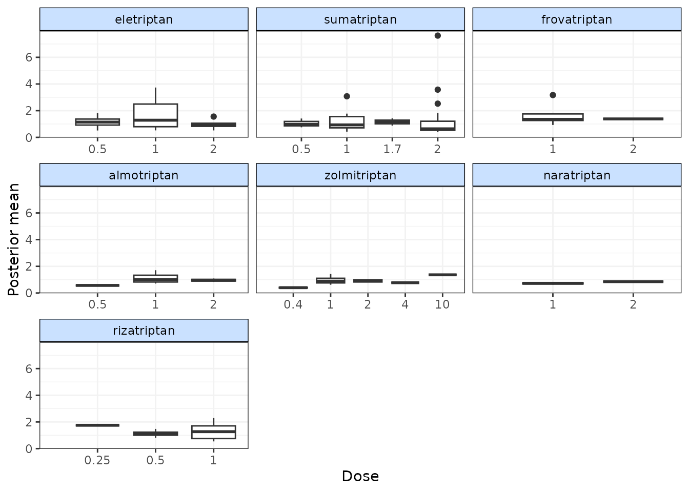
From these plots we can see that whilst the model fit does not seem to be systematically non-linear (which would suggest an alternative dose-response function may be a better fit), residual deviance is high at a dose of 1 for eletriptan, and at 2 for sumatriptan. This may indicate that fitting random effects may allow for additional variability in response which may improve the model fit.
If saved to an object, the output of devplot() contains the results for individual deviance contributions, and this can be used to identify any extreme outliers.
Fitted values
Another approach for assessing model fit can be to plot the fitted values, using fitplot(). As with devplot(), this may require running additional model iterations to monitor theta.
# Plot fitted and observed values with treatment labels
fitplot(trip.emax)
#> `theta` not monitored in mbnma$parameters.to.save.
#> additional iterations will be run in order to obtain results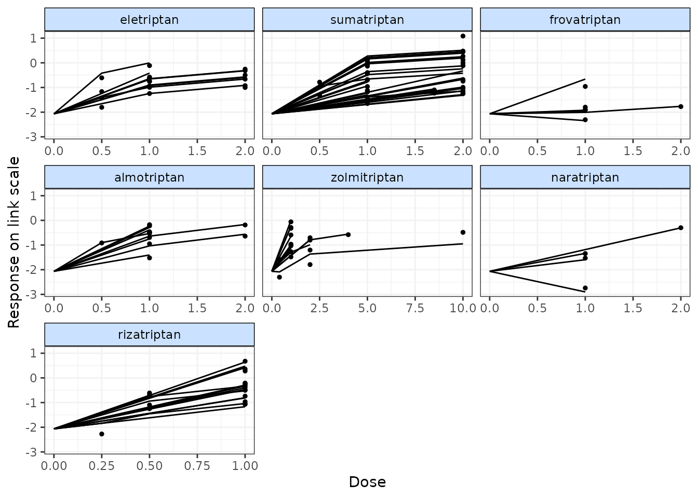
Fitted values are plotted as connecting lines and observed values in the original dataset are plotted as points. These plots can be used to identify if the model fits the data well for different agents and at different doses along the dose-response function.
Forest plots
Forest plots can be easily generated from MBNMA models using the plot() method on an "mbnma" object. By default this will plot a separate panel for each dose-response parameter in the model. Forest plots can only be generated for parameters which are modelled using relative effects and that vary by agent/class.
plot(trip.emax)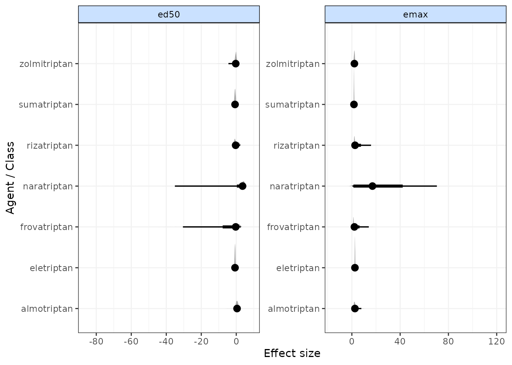
Estimating relative effects
It may be of interest to calculate relative effects between different doses of agents to obtain outputs that are more similar to those from standard NMA. Relative effects can take the form of odds ratios, mean differences or rate ratios, depending on the likelihood and link function used in a model. Estimating relative effects can be particularly helpful for dose-response functions where parameter interpretation can be challenging (e.g. splines, fractional polynomials).
The get.relative() function allows for calculation of relative effects between any doses of agents as specified by the user. This includes doses not available in the original dataset, as these can be estimated via the dose-response relationship. Optional arguments allow for calculation of 95% prediction intervals rather than 95% credible intervals (the default), and for the conversion of results from the log to the natural scale. The resulting relative effects can also be ranked (see Ranking for more details).
# Specify treatments (agents and doses) for which to estimate relative effects
treats <- list("Placebo"=0,
"eletriptan"= 1,
"sumatriptan"=2,
"almotriptan"=1)
# Print relative effects on the natural scale
rels <- get.relative(trip.emax, treatments = treats, eform=TRUE)
print(rels)
#> ============================================================
#> Relative treatment comparisons (95% credible intervals)
#> ============================================================
#>
#> Placebo_0 0.18 (0.16, 0.21) 0.25 (0.22, 0.27) 0.36 (0.31, 0.42)
#> 5.5 (4.8, 6.3) eletriptan_1 1.4 (1.2, 1.6) 2 (1.7, 2.4)
#> 4 (3.6, 4.5) 0.74 (0.64, 0.85) sumatriptan_2 1.5 (1.2, 1.7)
#> 2.8 (2.4, 3.2) 0.5 (0.42, 0.6) 0.68 (0.59, 0.8) almotriptan_1
# Rank relative effects
rank(rels)
#>
#> ================================
#> Ranking of dose-response MBNMA
#> ================================
#>
#> Includes ranking of relative effects between treatments from dose-response MBNMA
#>
#> 4 agents/classes/predictions ranked with negative responses being `worse`
#>
#> Relative Effects ranking (from best to worst)
#>
#> |Treatment | Mean| Median| 2.5%| 97.5%|
#> |:-------------|----:|------:|----:|-----:|
#> |Placebo_0 | 1| 1| 1| 1|
#> |almotriptan_1 | 2| 2| 2| 2|
#> |sumatriptan_2 | 3| 3| 3| 3|
#> |eletriptan_1 | 4| 4| 4| 4|Ranking
Rankings can be calculated for different dose-response parameters from MBNMA models by using rank() on an "mbnma" object. Any parameter monitored in an MBNMA model that varies by agent/class can be ranked. A vector of these is assigned to params. lower_better indicates whether negative responses should be ranked as “better” (TRUE) or “worse” (FALSE).
ranks <- rank(trip.emax, lower_better = FALSE)
print(ranks)
#>
#> ================================
#> Ranking of dose-response MBNMA
#> ================================
#>
#> Includes ranking of relative effects from dose-response MBNMA:
#> emax ed50
#>
#> 7 agents/classes/predictions ranked with positive responses being `better`
#>
#> emax ranking (from best to worst)
#>
#> |Treatment | Mean| Median| 2.5%| 97.5%|
#> |:------------|----:|------:|----:|-----:|
#> |naratriptan | 1.14| 1| 1| 3|
#> |sumatriptan | 2.88| 3| 2| 5|
#> |almotriptan | 3.56| 3| 2| 7|
#> |frovatriptan | 3.73| 4| 1| 7|
#> |zolmitriptan | 4.35| 4| 2| 7|
#> |rizatriptan | 5.88| 6| 4| 7|
#> |eletriptan | 6.46| 7| 5| 7|
#>
#>
#> ed50 ranking (from best to worst)
#>
#> |Treatment | Mean| Median| 2.5%| 97.5%|
#> |:------------|----:|------:|----:|-----:|
#> |eletriptan | 2.60| 2| 1| 6|
#> |sumatriptan | 2.98| 3| 1| 6|
#> |rizatriptan | 3.40| 3| 1| 7|
#> |frovatriptan | 3.94| 4| 1| 7|
#> |zolmitriptan | 4.33| 5| 1| 7|
#> |naratriptan | 5.34| 6| 1| 7|
#> |almotriptan | 5.41| 6| 1| 7|
summary(ranks)
#> $emax
#> rank.param mean sd 2.5% 25% 50% 75% 97.5%
#> 1 eletriptan 6.456667 0.7382212 5 6 7 7 7
#> 2 sumatriptan 2.882667 0.9006497 2 2 3 3 5
#> 3 frovatriptan 3.731667 1.5609215 1 2 4 5 7
#> 4 almotriptan 3.557000 1.4443383 2 2 3 5 7
#> 5 zolmitriptan 4.349000 1.1881370 2 4 4 5 7
#> 6 naratriptan 1.144000 0.6224091 1 1 1 1 3
#> 7 rizatriptan 5.879000 0.9818420 4 5 6 7 7
#>
#> $ed50
#> rank.param mean sd 2.5% 25% 50% 75% 97.5%
#> 1 eletriptan 2.603333 1.409013 1 1 2 4 6
#> 2 sumatriptan 2.982000 1.525708 1 2 3 4 6
#> 3 frovatriptan 3.935333 2.007941 1 2 4 6 7
#> 4 almotriptan 5.409333 1.601239 1 5 6 7 7
#> 5 zolmitriptan 4.332333 1.785390 1 3 5 6 7
#> 6 naratriptan 5.342000 1.876933 1 4 6 7 7
#> 7 rizatriptan 3.395667 1.770167 1 2 3 5 7The output is an object of class("mbnma.rank"), containing a list for each ranked parameter in params, which consists of a summary table of rankings and raw information on agent/class (depending on argument given to level) ranking and probabilities. The summary median ranks with 95% credible intervals can be simply displayed using summary().
Histograms for ranking results can also be plotted using the plot() method, which takes the raw MCMC ranking results stored in mbnma.rank and plots the number of MCMC iterations the parameter value for each treatment was ranked a particular position.
# Ranking histograms for Emax
plot(ranks, params = "emax")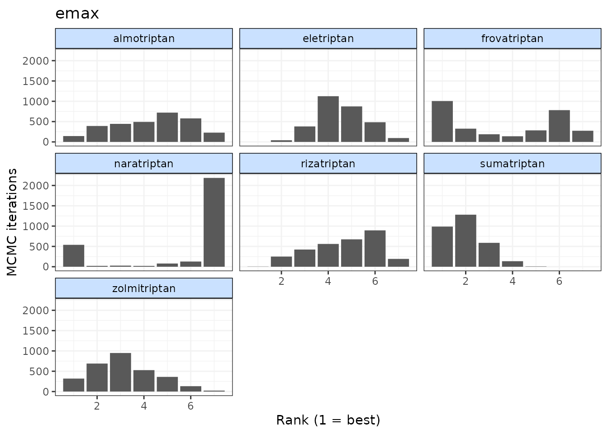
# Ranking histograms for ED50
plot(ranks, params = "ed50")
Alternatively, cumulative ranking plots for all parameters can be plotted simultaneously so as to be able to compare the effectiveness of different agents on different parameters. The surface under cumulative ranking curve (SUCRA) for each parameter can also be estimated by setting sucra=TRUE.
# Cumulative ranking plot for both dose-response parameters
cumrank(ranks, sucra=TRUE)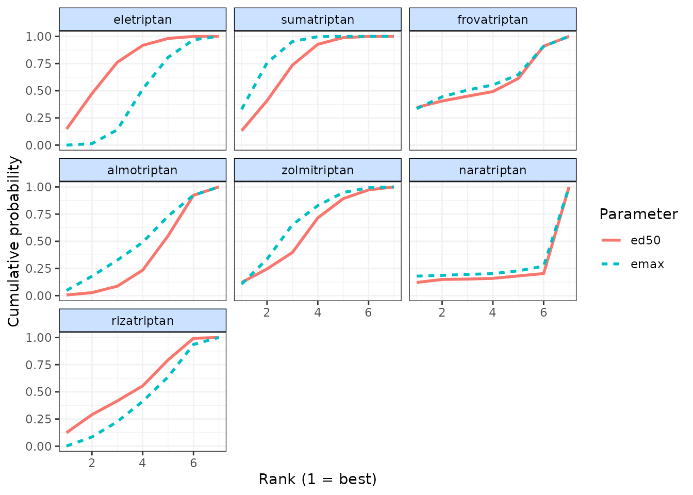
#> # A tibble: 14 × 3
#> agent parameter sucra
#> <fct> <chr> <dbl>
#> 1 eletriptan ed50 4.76
#> 2 eletriptan emax 1.04
#> 3 sumatriptan ed50 4.42
#> 4 sumatriptan emax 4.61
#> 5 frovatriptan ed50 3.48
#> 6 frovatriptan emax 3.76
#> 7 almotriptan ed50 2.08
#> 8 almotriptan emax 3.93
#> 9 zolmitriptan ed50 3.12
#> 10 zolmitriptan emax 3.15
#> 11 naratriptan ed50 2.13
#> 12 naratriptan emax 5.89
#> 13 rizatriptan ed50 4.01
#> 14 rizatriptan emax 1.62Prediction
After performing an MBNMA, responses can be predicted from the model parameter estimates using predict() on an "mbnma" object. A number of important arguments should be specified for prediction. See ?predict.mbnma for detailed specification of these arguments.
E0 This is the response at dose = 0 (equivalent to the placebo response). Since relative effects are the parameters estimated in MBNMA, the placebo response is not explicitly modelled and therefore must be provided by the user in some way. The simplest approach is to provide either a single numeric value for E0 (deterministic approach), or a string representing a distribution for E0 that can take any Random Number Generator (RNG) distribution for which a function exists in R (stochastic approach). Values should be given on the natural scale. For example for a binomial outcome:
- Deterministic:
E0 <- 0.2 - Stochastic:
E0 <- "rbeta(n, shape1=2, shape2=10)"
Another approach is to estimate E0 from a set of studies. These would ideally be studies of untreated/placebo-treated patients that closely resemble the population for which predictions are desired, and the studies may be observational. However, synthesising results from the placebo arms of trials in the original network is also possible. For this, E0 is assigned a data frame of studies in the long format (one row per study arm) with the variables studyID, and a selection of y, se, r, n and E (depending on the likelihood used in the MBNMA model). synth can be set to "fixed" or "random" to indicate whether this synthesis should be fixed or random effects.
E0 <- triptans[triptans$dose==0,]Additionally, it’s also necessary to specify the doses at which to predict responses. By default, predict() uses the maximum dose within the dataset for each agent, and predicts doses at a series of cut points. The number of cut points can be specified using n.doses, and the maximum dose to use for prediction for each agent can also be specified using max.doses (a named list of numeric values where element names correspond to agent names).
An alternative approach is to predict responses at specific doses for specific agents using the argument exact.doses. As with max.doses, this is a named list in which element names correspond to agent names, but each element is a numeric vector in which each value within the vector is a dose at which to predict a response for the given agent.
# Predict 20 doses for each agent, with a stochastic distribution for E0
doses <- list("Placebo"=0,
"eletriptan"=3,
"sumatriptan"=3,
"almotriptan"=3,
"zolmitriptan"=3,
"naratriptan"=3,
"rizatriptan"=3)
pred <- predict(trip.emax, E0="rbeta(n, shape1=2, shape2=10)",
max.doses=doses, n.dose=20)
# Predict exact doses for two agents, and estimate E0 from the data
E0.data <- triptans[triptans$dose==0,]
doses <- list("eletriptan"=c(0,1,3),
"sumatriptan"=c(0,3))
pred <- predict(trip.emax, E0=E0.data,
exact.doses=doses)
#> Values for `agent` with dose = 0 have been recoded to `Placebo`
#> agent is being recoded to enforce sequential numbering and allow inclusion of `Placebo`An object of class "mbnma.predict" is returned, which is a list of summary tables and MCMC prediction matrices for each treatment (combination of dose and agent). The summary() method can be used to print mean posterior predictions at each time point for each treatment.
summary(pred)
#> agent dose mean sd 2.5% 25% 50%
#> 1 Placebo 0 0.1239234 0.003314659 0.1175166 0.1216321 0.1238544
#> 2 eletriptan 0 0.1239234 0.003314659 0.1175166 0.1216321 0.1238544
#> 3 eletriptan 1 0.4372192 0.018748568 0.4015645 0.4241595 0.4370961
#> 4 eletriptan 3 0.5554795 0.025962306 0.5048505 0.5382250 0.5544769
#> 5 sumatriptan 0 0.1239234 0.003314659 0.1175166 0.1216321 0.1238544
#> 6 sumatriptan 3 0.3878595 0.017311905 0.3545228 0.3761121 0.3879320
#> 75% 97.5%
#> 1 0.1261965 0.1303876
#> 2 0.1261965 0.1303876
#> 3 0.4501417 0.4742725
#> 4 0.5731223 0.6070183
#> 5 0.1261965 0.1303876
#> 6 0.3992613 0.4228987Plotting predicted responses
Predicted responses can also be plotted using the plot() method on an object of class("mbnma.predict"). The predicted responses are joined by a line to form the dose-response curve for each agent predicted, with 95% credible intervals (CrI). Therefore, when plotting the response it is important to predict a sufficient number of doses (using n.doses) to get a smooth curve.
# Predict responses using default doses up to the maximum of each agent in the dataset
pred <- predict(trip.emax, E0=0.2, n.dose=20)
plot(pred)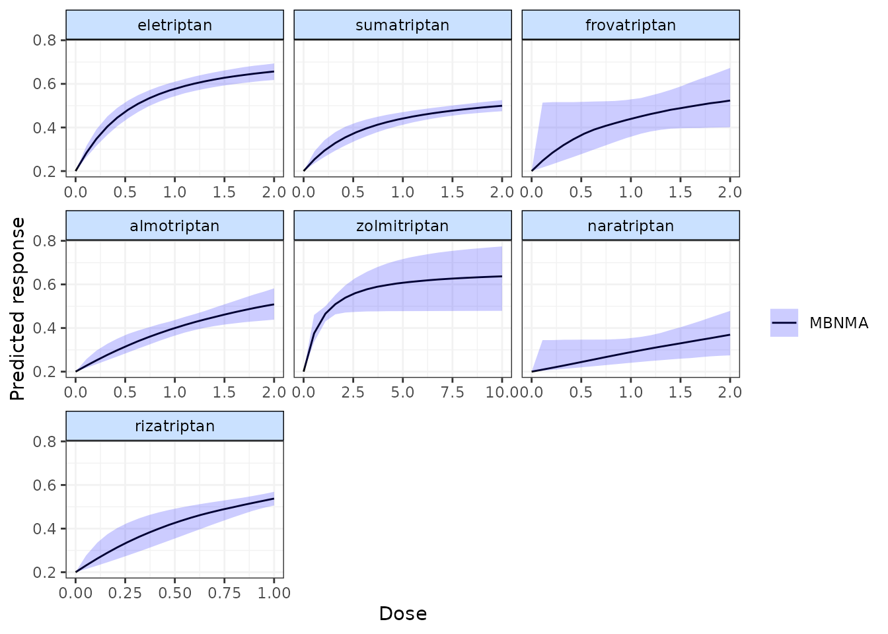
Shaded counts of the number of studies in the original dataset that investigate each dose of an agent can be plotted over the 95% CrI for each treatment by setting disp.obs = TRUE, though this requires that the original "mbnma.network" object used to estimate the MBNMA be provided via network.
plot(pred, disp.obs = TRUE)
#> 66 placebo arms in the dataset are not shown within the plots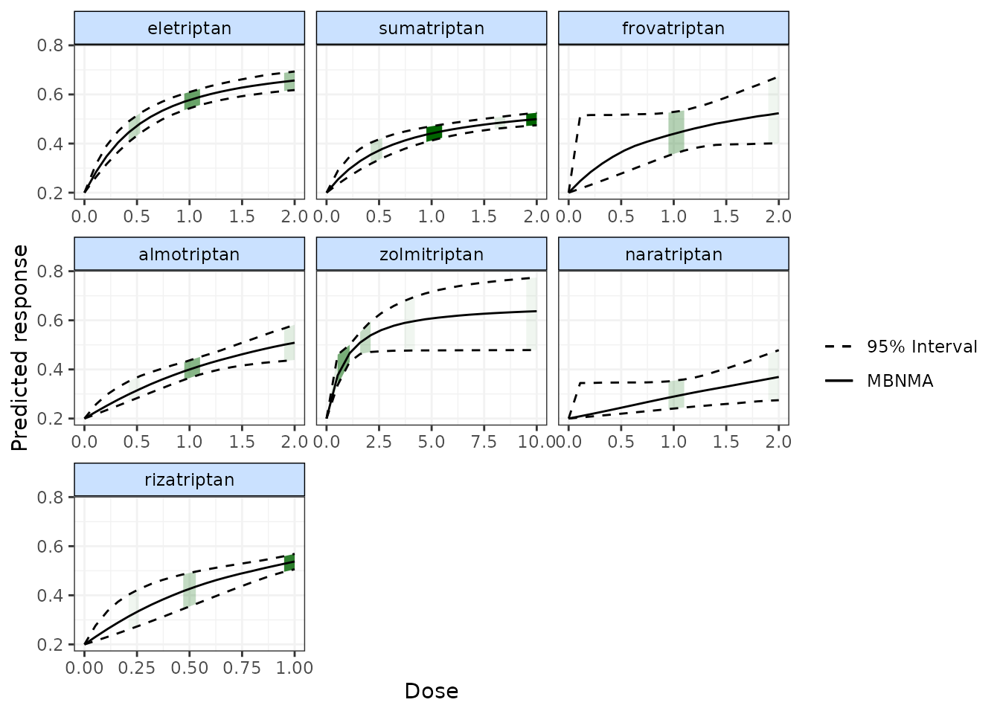
This can be used to identify any extrapolation/interpretation of the dose-response that might be occurring for a particular agent. As you can see, more observations typically leads to tighter 95% CrI for the predicted response at a particular point along the dose-response curve.
We can also plot the results of a “split” Network Meta-Analysis (NMA) in which all doses of an agent are assumed to be independent. As with disp.obs we also need to provide the original mbnma.network object to be able to estimate this, and we can also specify if we want to perform a common or random effects NMA using method. Treatments that are only connected to the network via the dose-response relationship (rather than by a direct head-to-head comparison) will not be included.
alognet <- mbnma.network(alog_pcfb)
alog.emax <- mbnma.run(alognet, fun=demax(), method="random")
pred <- predict(alog.emax, E0=0, n.dose=20)
plot(pred, overlay.split = TRUE, method="random")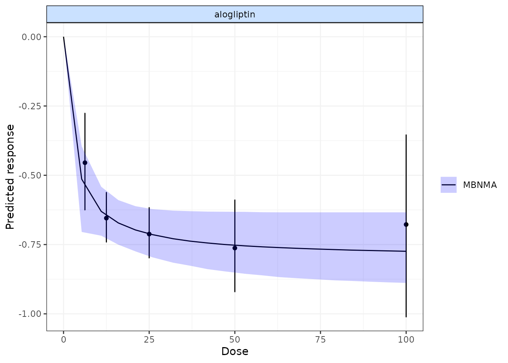
By plotting these, as well as observing how responses can be extrapolated/interpolated, we can also see which doses are likely to be providing most information to the dose-response relationship. The tighter 95% CrI on the predicted responses from the MBNMA also show that modelling the dose-response function also gives some additional precision even at doses for which there is information available.
More detailed documentation can be accessed using ?plot.mbnma.predict.
Ranking predicted responses
Predicted responses from an object of class("mbnma.predict") can also be ranked using the rank() method. As when applied to an object of class("mbnma"), this method will rank parameters (in this case predictions) in order from either highest to lowest (direction=1) or lowest to highest (direction=-1), and return an object of class("mbnma.rank").
If there have been predictions at dose = 0 for several agents only one of these will be included in the rankings, in order to avoid duplication (since the predicted response at dose = 0 is the same for all agents).
pred <- predict(trip.emax, E0=0.2, n.doses=4,
max.doses = list("eletriptan"=5, "sumatriptan"=5,
"frovatriptan"=5, "zolmitriptan"=5))
ranks <- rank(pred)
plot(ranks)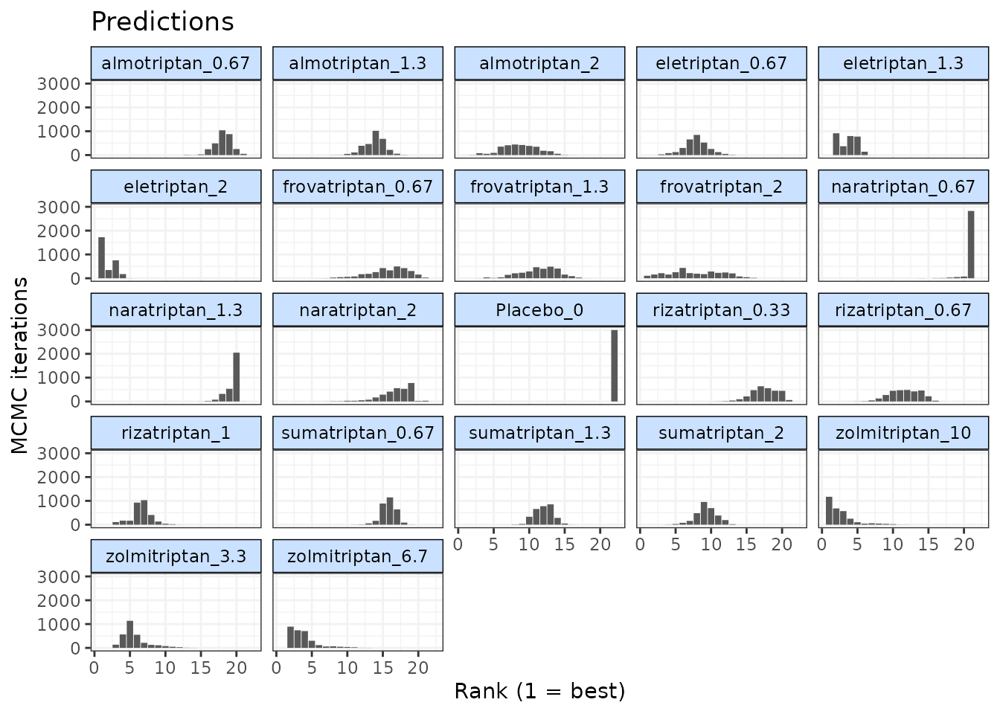
Consistency Testing
When performing a MBNMA by pooling relative treatment effects, the modelling approach assumes consistency between direct and indirect evidence within a network. This is an incredibly useful assumption as it allows us to improve precision on existing direct estimates, or to estimate relative effects between treatments that have not been compared in head-to-head trials, by making use of indirect evidence.
However, if this assumption does not hold, this is extremely problematic for inference, so it is important to be able to test it. A number of different approaches exist to allow for this in standard Network Meta-Analysis (NMA) (Dias et al. 2013), but within dose-response MBNMA there is added complexity because the consistency assumption can be conceptualised either for each treatment comparison (combination of dose and agent), or for each agent, where consistency is required for the agent-level parameters governing the dose-response relationship. A detailed description of consistency testing in MBNMA models is given in Pedder et al. (2021).
Testing for consistency at the agent-level is challenging as there is unlikely to be the required data available to be able to do this - included studies in the dataset must have multiple doses of multiple agents, so that sufficient information is available to estimate dose-response parameters within that study. However, testing for consistency at the treatment-level is possible in MBNMA, and this is described below. In practice, testing for consistency at the treatment-level should suffice, as any inconsistency identified at the treatment level should also translate to inconsistency at the agent level and vice versa (Pedder, Dias, Boucher, et al. 2021).
Consistency also depends on the functional form assumed for the dose-response relationship, and so is inextricably linked to model fit of the dose-response relationship. A thorough assessment of the validity of the fitted model is therefore important to be confident that the resulting treatment effect estimates provide a firm basis for decision making.
When meta-analysing dose-response studies, the potential for inconsistency testing may actually be reasonably rare, as most (if not all) trials will be multi-arm placebo-controlled. Since each study is internally consistent (the relative effects within the trial will always adhere to consistency relationships), there will be no closed loops of treatments that are informed by independent sources of evidence.
Unrelated Mean Effects (UME) model at the treatment level
To check for consistency at the treatment level using UME we fit an NMA that does not assume consistency relationships, and that only models the direct relative effects between each arm in a study and the study reference treatment (Dias et al. 2013). If the consistency assumption holds true then the results from the UME model and the NMA will be very similar. However, if there is a discrepancy between direct and indirect evidence in the network, then the consistency assumption may not be valid, and the UME results are likely differ in several ways:
- The UME model may provide a better fit to the data, as measured by residual deviance
- The between-study SD for different parameters may be lower in the UME model
- Individual relative effects may differ in magnitude or (more severely) in direction for different treatment comparisons between UME and NMA models.
# Using the alogliptin dataset
alognet <- mbnma.network(alog_pcfb)
nma <- nma.run(alognet, method="random")
ume <- nma.run(alognet, method="random", UME = TRUE)| Model | Residual Deviance | Betwen-study SD |
|---|---|---|
| NMA | 46.17 | 0.12 (0.075, 0.18) |
| UME | 45.76 | 0.14 (0.087, 0.21) |
As both the residual deviances and between-study SDs are similar, this would suggest that there is no evidence of inconsistency in this network, though comparing results for individual comparisons from the models can also be useful.
Deviance-deviance plots (Dias et al. 2013) can be compared between different models to investigate the fit of different data points. This can be done for two different models at a time using devdev():
# Compares residual deviance contributions from NMA and UME models
devdev(nma, ume, dev.type="resdev")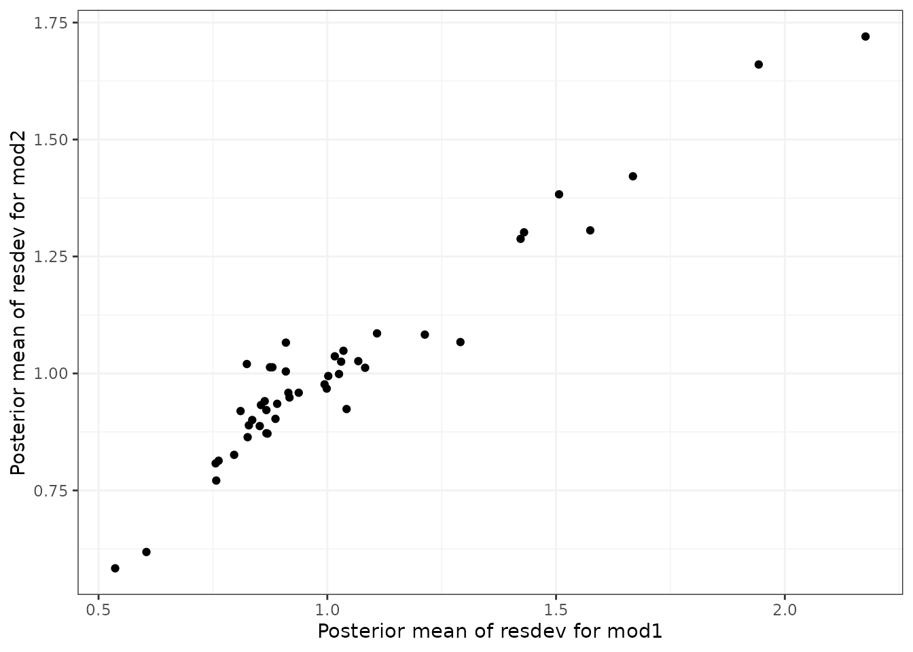
In Pedder et al. (2021) we suggest comparing the following models using these plots to evaluate consistency in MBNMA:
- Selected dose-response MBNMA model
- Treatment-level NMA model (using same common/random treatment effects as for the MBNMA)
- Treatment-level UME model (using same common/random treatment effects as for the MBNMA)
Differences in deviance contributions between models 1 and 2 will highlight data points which may fit the dose-response relationship poorly. Difference in deviance contributions between models 2 and 3 will highlight data points which are suggestive of inconsistency.
Node-splitting at the treatment level
Another approach for consistency checking is node-splitting. This splits contributions for a particular treatment comparison into direct and indirect evidence, and the two can then be compared to test their similarity (Valkenhoef et al. 2016). Node-splitting in dose-response MBNMA is an extension to this method, as indirect evidence contributions can be calculated incorporating the dose-response function. mbnma.nodesplit() takes similar arguments to mbnma.run(), and returns an object of class("nodesplit").
In addition to these, the argument comparisons can be used to indicate which treatment comparisons to perform a nodesplit on. If left as NULL (the default) node-splits will automatically be performed in all closed loops of treatments in which comparisons are informed by independent sources of evidence. This is somewhat similar to the function gemtc::mtc.nodesplit.comparisons(), but uses a fixed network reference treatment and therefore ensures differences between direct and indirect evidence are parameterised as inconsistency rather than as heterogeneity (Dias et al. 2013). However, it also allows for indirect evidence to be informed via the dose-response relationship even if there is no pathway of evidence between the treatments, which can in fact lead to additional potentially inconsistent loops. To incorporate indirect evidence in this way incldr=TRUE can be set in inconsistency.loops(), the default when using mbnma.nodesplit()
The complexity of the dose-response relationship fitted and the amount of indirect evidence available will also affect the number of comparisons on which node-splitting is possible (Pedder, Dias, Boucher, et al. 2021). If there is only limited indirect dose-response information for a given comparison (e.g. only two doses available for the agents in the comparison), then only a simpler dose-response function (e.g. exponential) can be fitted. The values given in inconsistency.loops()$path can give an indication as to the number of doses available for each comparison. For example, drparams 3 4 would indicate that the indirect evidence is estimated only via the dose-response relationship, and that within the indirect evidence there are three doses available for estimating the dose-response of the agent in t1 of the comparison, and four doses available for estimating the dose-responses of the agent in t2 of the comparison. This means that a three-parameter dose-response function would be the most complex function that could be used when node-splitting this comparison.
As several models have to be run for each closed loop of treatments, node-splitting can take some time to run, and it therefore is not shown for the purposes of this vignette.
# Using the psoriasis dataset (>75% improvement in PASI score)
psoriasis$r <- psoriasis$r75
psorinet <- mbnma.network(psoriasis)
# Identify comparisons on which node-splitting is possible
splitcomps <- inconsistency.loops(psorinet$data.ab, incldr=TRUE)
print(splitcomps)
# If we want to fit an Emax dose-response function, there is insufficient
#indirect evidence in all but the first 6 comparisons
nodesplit <- mbnma.nodesplit(psorinet, fun=demax(), comparisons=splitcomps[1:6,], method="common")
print(nodesplit)Performing the print() method on an object of class("nodesplit") prints a summary of the node-split results to the console, whilst the summary() method will return a data frame of posterior summaries for direct and indirect estimates for each split treatment comparison.
The nodesplit object itself is a list with results for each treatment comparison that has been split. There is a lot of information within the results, but the most useful (and easily interpretable) elements are:
-
p.valuesthe Bayesian p-value for the posterior overlap between direct and indirect estimates -
quantilesthe median and 95%CrI of the posterior distributions for direct and indirect evidence, and for the difference between them. -
forest.plota forest plot that shows the median and 95% CrI for direct and indirect estimates -
density.plota plot that shows the posterior distributions for direct and indirect estimates
It is possible to generate different plots of each nodesplit comparison using plot():
MCMC Convergence
MBNMAdose runs Bayesian models in JAGS, which uses Markov Chain Monte Carlo (MCMC) simulation. However, the validity of results is reliant on the MCMC chains having converged successfully on the posterior densities of all parameters in the model. For highly parameterised models run on relatively limited data, as is often the case with MBNMA models, convergence can often be an challenge. Note that convergence is necessary to be able to compare models and evaluate model fit. However, successful convergence does not imply good model fit.
A full explanation of how to facilitate and to check for convergence is outside the scope of this vignette, but below are some simple steps for checking convergence. None of these steps alone ensures convergence has been successful, but interpretation of them jointly can provide strong evidence of it.
- Rhat values close to 1 (<1.1 is considered acceptable by some). These are shown for monitored parameters in the summary statistics table when an
"mbnma"or"nma"object is printed. - Trace plots that have a “fuzzy caterpillar” look that shows good mixing of MCMC chains
- Density plots that show a smooth posterior distribution that is similar across all chains
- Autocorrelation plots that show low autocorrelation between neighbouring MCMC iterations (i.e. low correlation at higher lags)
An HTML document with all the above convergence plots can easily be generated for all parameters in the model simultaneously using mcmcplots::mcmcplot().
Two steps may improve convergence when using MBNMAdose. One step is to run models for more iterations (this can be done using the n.iter argument in mbnma.run()). It can take time for MCMC chains to converge, particularly for non-linear models with limited data. It is important to note that chains should only be monitored after they have converged - increasing the number of burn-in iterations ensures that this is the case (using the n.burnin argument in mbnma.run()). Another method to improve convergence is by providing more information to the model via informative priors.
Summary
MBNMAdose provides a complete set of functions that allow for performing dose-response MBNMA, model checking, prediction, and plotting of a number of informative graphics. By modelling a dose-response relationship within the network meta-analysis framework, this method can help connect networks of evidence that might otherwise be disconnected, allow extrapolation and interpolation of dose-response, and improve precision on predictions and relative effects between agents.
The package allows a range of dose-response functions (as well as the possibility to incorporate user-defined functions) and facilitates model specification in a way which allows users to make additional modelling assumptions to help identify parameters.
References
Dias, S., N. J. Welton, A. J. Sutton, D. M. Caldwell, G. Lu, and A. E. Ades. 2013. “Evidence Synthesis for Decision Making 4: Inconsistency in Networks of Evidence Based on Randomized Controlled Trials.” Journal Article. Med Decis Making 33 (5): 641–56. https://doi.org/10.1177/0272989X12455847.
Furukawa, T. A., A. Cipriani, P. J. Cowen, S. Leucht, M. Egger, and G. Salanti. 2019. “Optimal Dose of Selective Serotonin Reuptake Inhibitors, Venlafaxine, and Mirtazapine in Major Depression: A Systematic Review and Dose-Response Meta-Analysis.” Journal Article. Lancet Psychiatry 6: 601–9.
Gelman, Andrew, Jessica Hwang, and Aki Vehtari. 2014. “Understanding Predictive Information Criteria for Bayesian Models.” Journal Article. Statistics and Computing 24 (6): 997–1016. https://doi.org/10.1007/s11222-013-9416-2.
JAGS Computer Program. 2017. https://mcmc-jags.sourceforge.io/.
Langford, O., J. K. Aronson, G. van Valkenhoef, and R. J. Stevens. 2016. “Methods for Meta-Analysis of Pharmacodynamic Dose-Response Data with Application to Multi-Arm Studies of Alogliptin.” Journal Article. Stat Methods Med Res. https://doi.org/10.1177/0962280216637093.
Lu, G., and A. E. Ades. 2004. “Combination of Direct and Indirect Evidence in Mixed Treatment Comparisons.” Journal Article. Stat Med 23 (20): 3105–24. https://doi.org/10.1002/sim.1875.
Mawdsley, D., M. Bennetts, S. Dias, M. Boucher, and N. J. Welton. 2016. “Model-Based Network Meta-Analysis: A Framework for Evidence Synthesis of Clinical Trial Data.” Journal Article. CPT Pharmacometrics Syst Pharmacol 5 (8): 393–401. https://doi.org/10.1002/psp4.12091.
Owen, R. K., D. G. Tincello, and R. A. Keith. 2015. “Network Meta-Analysis: Development of a Three-Level Hierarchical Modeling Approach Incorporating Dose-Related Constraints.” Journal Article. Value Health 18 (1): 116–26. https://doi.org/10.1016/j.jval.2014.10.006.
Pedder, H., S. Dias, M. Bennetts, M. Boucher, and N. J. Welton. 2019. “Modelling Time-Course Relationships with Multiple Treatments: Model-Based Network Meta-Analysis for Continuous Summary Outcomes.” Journal Article. Res Synth Methods 10 (2): 267–86.
———. 2021. “Joining the Dots: Linking Disconnected Networks of Evidence Using Dose-Response Model-Based Network Meta-Analysis.” Journal Article. Medical Decision Making 41 (2): 194–208.
Pedder, H., S. Dias, M. Boucher, M. Bennetts, D. Mawdsley, and N. J. Welton. 2021. “Methods to Assess Evidence Consistency in Dose-Response Model Based Network Meta-Analysis.” Journal Article. Statistics in Medicine 41 (4): 625–44. https://onlinelibrary.wiley.com/doi/10.1002/sim.9270.
Plummer, M. 2008. “Penalized Loss Functions for Bayesian Model Comparison.” Journal Article. Biostatistics 9 (3): 523–39. https://pubmed.ncbi.nlm.nih.gov/18209015/.
Spiegelhalter, D. J., N. G. Best, B. P. Carlin, and A. van der Linde. 2002. “Bayesian Measures of Model Complexity and Fit.” Journal Article. J R Statistic Soc B 64 (4): 583–639.
Thorlund, K., E. J. Mills, P. Wu, E. P. Ramos, A. Chatterjee, E. Druyts, and P. J. Godsby. 2014. “Comparative Efficacy of Triptans for the Abortive Treatment of Migraine: A Multiple Treatment Comparison Meta-Analysis.” Journal Article. Cephalagia. https://doi.org/10.1177/0333102413508661.
Valkenhoef, G. van, S. Dias, A. E. Ades, and N. J. Welton. 2016. “Automated Generation of Node-Splitting Models for Assessment of Inconsistency in Network Meta-Analysis.” Journal Article. Res Synth Methods 7 (1): 80–93. https://doi.org/10.1002/jrsm.1167.
Warren, R. B., M. Gooderham, R. Burge, B. Zhu, D. Amato, K. H. Liu, D. Shrom, J. Guo, A. Brnabic, and A. Blauvelt. 2019. “Comparison of Cumulative Clinical Benefits of Biologics for the Treatment of Psoriasis over 16 Weeks: Results from a Network Meta-Analysis.” Journal Article. J Am Acad Dermatol 82 (5): 1138–49.